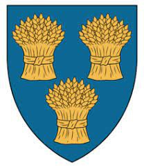

Lord av Badenoch, Greve av Buchan & Menteith. Blev högst 68 år.
1190 Rowallan, Scotland. [1]
1258.
Walter "Lord of Badenoch, 4th Earl of Menteith" Comyn
Born 1190 in Buchan, Aberdeenshire, , Scotlandmap
ANCESTORS förfäder
Son of William (Comyn) Comyn Earl of Buchan and Unknown (Unknown) de Comyn
Brother of Jean (Comyn) Comyn Countess of Ross, David (Comyn) de Comyn Lord of East Kilbride, Agnes (Comyn) Meldrum [half], Richard Comyn, Alexander (Comyn) VI Earl of Buchan [half], Margaret (Comyn) de Keith [half], Idonea (Comyn) Haye [half] and Elizabeth Comyn [half]
Husband of Isabella (Mentieth) Russell — married [date unknown] (to 1258) [location unknown]
[children unknown]
Died about Nov 1258 in Perth, Perthshire, , ScotlandKarta
Profile managers: Allan Stuart privatmeddelande [send private message] and Scotland Project WikiTree privatmeddelande [send private message]
Profile last modified 29 Jun 2021 | Created 21 Feb 2011
This page has been accessed 4,432 times.
Medeltida Skottland
Walter Comyn was an inhabitant of Medieval Scotland.
Join: Scotland Project
Discuss: SCOTLAND
Biography
Family and Early Career
Walter was the second known son of William Comyn, earl of Buchan, and his first wife, whose name is unknown.[1][2] His large family was later to play an important role in his ability to consolidate political power, as they formed a closely knit and widely influential group. He had three brothers: Richard (the eldest); David, who married Isabel de Valognes and thereby became lord of Kilbride; William (a clerk); and a sister Jean who married William Ross, 2nd earl of Ross. From his father's second marriage to Margaret, countess of Buchan, he had three half-brothers: Alexander Comyn, earl of Buchan, who married Elizabeth de Quincey; William; and Fergus; and three half-sisters: Idonea who married Gilbert de la Hay; Agnes who married Philip Meldrum; and Elizabeth who married William, earl of Mar.[2]
Perhaps because his father was justiciar of Scotia (1165-1214) and sheriff of Forfar (c.1195-c.1212), Walter appeared regularly at the royal court beginning in the later years of William the Lion's reign and throughout the reign of Alexander II.[2] He witnessed a number of royal charters, was present at the marriage of Alexander II with Joan of England, and by 1229 was in possession of the lands of Badenoch which were granted to him by the king, presumably as a reward for his father William Comyn's quelling of a rebellion in Moray that year.[3] Sometime before 9 January 1234, Comyn married Isabella, countess of Menteith, and in her right he became the earl of Menteith.[4]
Because of his position as Lord of Badenoch (a strategic area overlooking the principal passes from the north and west Highlands into the Tay basin) and his control of the earldom of Menteith, Comyn was a key figure in enforcing royal authority in the north.[2] In 1235 his authority was extended to the south west when he was made responsible for restoring order to Galloway after Alexander II defeated a rebellion there.[5][6] Shortly after this, Comyn became widely recognized as a dominant force in Scottish politics.[2] He was the undisputed leader of a tightly knit family whose three major branches (Badenoch, Buchan, and Kilbride) controlled the earldoms of Menteith, Buchan, and (before 1242) Angus; they also held influence (though marriages) over three additional earldoms: Ross, Mar, and (before 1242) Atholl; and they held the important lordships of Badenoch, Lochaber, Kirkintilloch, Lenzie, Machan, East Kilbride, Bedrule, Scraesburgh, Tarset, and Thornton.[7]
Conflicts with Bissets and Durwards
The Comyns had several rivals who challenged their authority in the north. First among these were the Durwards, who held the lordships of Boleskine and Urquhart on the east and west shores of Loch Ness, and were also prominent at the royal court.[8] The Durwards were anxious to acquire an earldom of their own and, being related by marriage to a daughter of Gilchrist, earl of Mar, put forth a claim to that earldom.[8] As a result, they were granted a large area of land in Mar but were denied the earldom itself, which came under the influence of the Comyns when Walter Comyn's sister Elizabeth married William, earl of Mar (from an alternative line of earls).[9] The Durwards next turned their sights on the earldom of Atholl. Alan Durward held the title of earl of Atholl for a brief time after it was stripped from Thomas of Galloway, although it is not known whether he assumed that right because he was guardian to the heir or because he married the heiress.[9] The earldom of Mar, however, also ended up under the control of the Comyn family through their relative Patrick of Atholl, who was the son of Isabel and Thomas of Galloway.[9] Twice the Durwards' ambitions to control an earldom were prevented by the Comyns.
The Comyns second rival for power in the north was a close neighbor of the Durwards, the Bisset family. They held the lordships of Stratherick, Arran, Aird, Abertarff, and Aboyne, and greatly resented the fact that the nearby lordship of Badenoch was given to the Comyns.[9] In 1242, Patrick, heir to the earldom of Atholl (and a connection of the Comyns) was killed in his lodgings, which were then set on fire so that his death would appear accidental.[9] Patrick's uncle by marriage, Walter Bisset, was implicated in the murder and the Comyns were determined to avenge Patrick's death.[2] Alexander Comyn, heir to Buchan, began conducting incursions into Bisset's lands at Aboyne,[10] and Walter Comyn used his influence at court to secure a guilty verdict that resulted in Walter Bisset and his nephew John being disinherited and sent into exile.[11] Bisset fled south and claimed he had been unjustly accused, convincing Henry III that Comyn had accrued so much power that he represented a threat to England and was fortifying his castles on the border in the event of conflict between the two nations. [11] The long standing enmity between the Durwards, Bissets, and Comyns now had international consequences. The English king required Walter Comyn and all of his allies (forty-one nobles) to swear loyalty to himself,[12] and he appointed Alan Durward as justiciar of Scotia in an attempt to curb Comyn's power.[2]
National Party och Alexander III:s minoritet
Oavsett Durwards tillträde förblev Comyns stora skara supportrar (som mestadels bestod av hans egna mycket inflytelserika familjemedlemmar men även inklusive andra som Nicholas de Soules, de la Hays, de Valognes, de Mountfichets och de Grahams) en mycket enad grupp. [13] Comyn hade också stöd från de flesta av de högst rankade medlemmarna av prästerskapet, efter att ha fortsatt sin fars beskydd strategiskt och även byggt ett stort kloster för Augustinerkanonerna på Isle of Inchmahome någon gång efter 1238. [14] [15] [ [16] Även om Durward var tekniskt rättvisande, saknade han politiskt stöd för att begränsa Comyns makt. [2]När Alexander II dog 1249 försökte Durward ta kontroll över regeringen genom att utse sig själv till väktare av den unge tronföljaren. Comyn ingrep genom att övertyga adeln om att den unge kungen skulle krönas omedelbart, och han var en nyckelfaktor för att övertyga kungen av England att ingripa genom att gifta den unge kungen av Skottland (10 år) med Henrik III:s egen dotter, Elizabeth (elva år). ). [17] [18] Omedelbart efter bröllopet anklagade Comyn Durward för att försöka skapa sig själv som härskare över Skottland, och hans fall var så övertygande att Henry tog bort justitiaren, kanslern och kammarherren 1251 och återigen satte Comyns anhängare i alla. av dessa positioner. [17]Walter Comyn blev inte själv justitieman, men han såg till att Alexander Comyn, jarl av Buchan, gjorde det. [2]
År 1255 kunde Durward åter ta hjälp av den engelske kungen och genomföra en motkupp. Comyn-ledarna ersattes med ett råd på femton, och Durward blev återigen justitieråd i Skottland. [2] Han förnyade också sitt anspråk på jarldömet Mar. [2] Comyn behöll dock viktig stöd från prästerskapet och inte bara avvisades Durwards försök att vinna jarldömet efter en påvlig undersökning, utan påven var så upprörd att Durward hade försökt förhindra invigningen av Gamelin (Comyn-regeringens kansler) till St Andrews ser genom att förbjuda honom, att hela Durward-regeringen exkommunicerades. [19]Durward blev alltmer impopulär bland den skotska adeln och 1257 kidnappade Comyn och hans anhängare den unge kungen vid Kinross och tog kontroll över regeringen. [20] Eftersom Durward-regeringen hade bannlysts, hävdade de, hade hela landet vanhedrats. [21] Eftersom Henrik III stod inför stor opposition hemma, var han inte längre i stånd att ingripa i den skotska regeringen. [2] Ett nytt styrande råd på tio inrättades, som inkluderade fyra Comyn-supportrar (som leds av Walter Comyn) och fyra Durward-supportrar. [2]
Äktenskap och barn
Walter Comyn gifte sig (någon gång mellan 30 juni 1233 och 9 januari 1234) med Isabella Menteith , dotter och arvtagare till Maurice , jarl av Menteith. [2] [22] Det fanns ett barn från detta äktenskap, en son Henry, som namngavs som son till jarlen av Menteith när han bevittnade en stadga daterad ca 1250 från Maldouen, jarl av Lennox, till Maldouen, dekanus på Luss och hans son Gillemore, som återställer vissa länder i Luss. [23] [24] Eftersom hans namn inte förekommer i några ytterligare dokument och han inte nämns efter Walter Comyns död, antas han ha avlidit sin far.
Död
Walter Comyn var fortfarande en stor politisk maktmäklare i Skottland när han dog i början av november 1258, uppenbarligen av ett fall från sin häst. [25] Hans änka gifte sig nästan omedelbart med Sir John Russell , en engelsk riddare om vilken lite är känt. [26] Hans brorson och arvtagare, John Comyn , den röde herren av Badenoch, försökte ta menteiths jarldöme från Isabella och hävdade att hon hade förgiftat sin man och att både Isabella och Russell tillfälligt fängslades. [27] John Comyn innehade earldomen för bara en kort tid, dock innan kungen beviljade det till Isabellas yngre syster, Mary , och hennes man, Walter Stewart . [28] [27]
Walter Comyns sista viloplats är inte känd med säkerhet, men traditionen säger att hans kvarlevor begravdes i klostret som han själv hade övervakat byggandet av, på ön Inchmahome. [29]